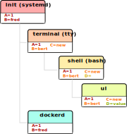

Welcome 👋
Expectations:
* You know what a shell is. * You know what bash is specifically. * You know how to write shell scripts. * You won't be an expert in anything. * You ask questions immediately. * You don't expect this workshop is complete. * Some entertainment.
My expectations:
- You ask immediately when you did not understand something.
- You can try commands in parallel.
- You will be tested at the end.
- You will not need to understand everything, but it's good to have a mind map of things that are possible.
Mythenmetzsche Ausschweifungen all day long.
Also: First try of those slides. Could happen that I forgot something to explain that is obvious to me, but is not for you. Please tell me early. I need the feedback to get the knowledge across.
Remember: Learning bash takes usually long and you just get the intro today with the lemur-condensed knowledge. You need to practice it.
About 60 slides, so even if I do 1 slide per 2 minutes, we'll still end up with several hours.
After this workshop... 🧪
You should be able to learn stuff and pick things up. I give you pointers on what to learn and can help but I can't lear stuff for you.
You should be an advanced beginner now, don't go to an expert beginner afterwards!
WHAT IS BASH? Please define.
What is a shell? 🐚
# The dumbest interpreter/REPL on earth: from shlex import split from sys import stdin, stdout from subprocess import call while True: # Draw prompt: stdout.write('> ') stdout.flush() # Start requested program, # print to stdout and stderr. call(split(stdin.readline()))
Why is the shell? 🦐

Terminology 🥼
shell := the intepreter. bash := one specific shell. script := list of shell commands. terminal := the »UI« of the shell.
History ⏳
1969: Mainframes with Terminal. 1977: Bourne Shell (»sh«). 1987: Bourne again Shell: Bash 1.0 1990: POSIX Shell Standard. 1995: Cygwin: Windows compatibility 2004: Bash 4
Moral of the story: Was intented as language, but somehow got a bit out of control and became one.
Cygwin
Note that this is a bash workshop but we focus on the part that all Posix shells implement. There are almost no bash specific features in this workshop.
bash > python? 🤔
Nope. The ba in bash stands for bastel.
Do not write large programs in it.
The End 🏚
Go learn Python.
Questions?
Python's use case is writing small to middle large programs. Bash is to write tiny to small programs.
There's Perl, which is the evil bastard child of both worlds, which kinda succeeds in both.
Bash is »duct tape«... 🖇
...and an interactive language!
Several good high potential use-cases:
- Automation
- Administration
- Deployment
- Test suites
- Oneliners
- Text-based tasks
glue: not in the sense you can sniff it though. Not a programming languages, but rather easy way to integrate tools made in different languages.
Examples in GBS:
- melon
- test suite
- deployment scripts
-> Explain melon.
Advantages 👍
- Even shorter than Python.
- Shell integrates well with other tools.
- Interactive programming.
- Bash is everywhere where Linux is.
- Easy to debug & well known.
- Shell is the only IDE you'll ever need.
- Almost all programs have a command-line.
And other tools include python for more complicated automation tasks.
Disadvantages 👎
- Slow as fuck.
- Only data type is string.
- Really bad at math.
- Plain awkward.
- Not every program integrates well.
- Not always portable.
- Sometimes dangerous.
- Slow -> Not relevant usually.
- Math -> No floating point. That's annoying.
- Plain awkward -> And sometimes annoying. Easy to make mistakes.
- Integration -> Only for unix philosophy programs.
Little lie: bash also supports integers... kind of. But we're not talking about this here and it does not really matter.
What? »Dangerous«? 😱
Different Shells 🐌
- Microsoft cmd.exe™
- Windows PowerShell
- Dash: Minimal
- Fish: Feelgood-Shell.
- Zsh: What I use.
- Oil: Interesting...
bash
- Nicht immer kompatibel
- Viele andere, viele die sich nicht verbreitet haben.
Table of Contents
1. Variables
How to use variables in bash.
2. Processes
All about communication with and between processes.
3. Control
Control structure syntax.
4. Lines
Working with line separated data.
5. Files
Working with files.
6. Misc
Collection of tips and tricks.
Practice (optional)
Actual ticket we can do.
0. Preface: Scripts
#!/bin/bash # I'm a comment. # And the first line is a »shebang«. # This is a command like you would type it normally: echo "not good."
0. Help me!
man man whatis this cheese --help
Practice reading a --help output.
1. Vars: Basics
$ PRESCHL="Kackvooochel" $ echo "Q: Tier des Jahres? A: Der ${PRESCHL}." Q: Tier des Jahres? A: Der kackvooochel
- Always key value.
- You don't have to quote it, but you should.
- You can write it lower case, but if it's used by other parts of a script, upper case is preferred to tell it apart it from commands.
1. Vars: Scope #1
- Processes build a tree.
- Each process has a list of environment variables (and values)
- New processes inherit the variables of the previous process.
- But: Only exported variables get inherited (unexported vars exist only in the shell)
1. Vars: Scope #2
Different types in a shell:
- Exported variables
- Local variables
- Global variables
# Default: Global variables. $ A=1 $ echo $A 1 $ sh -c 'echo $A' <empty> $ export A $ sh -c 'echo $A'
Bash variables start their life not as exported (i.e. they don't make it to the process)
Explain export command here.
Show that you can also prefix a command with a variable.
1. Vars: Substitutions
V="preschl is a droddl"
echo "${V/droddl/kackvoochel}"
echo "${W:-default}"
echo "${W:-${V}}"More info here.
1. Vars: Naming
Not allowed:
$ | ; & ' " : {} \ > < * ? -- !Just do this:
UPPERCASE_WITH_UNDERSCORES_FOR_GLOBALS local_vars_may_have_lowercase
Show for example "!" in a double quoted string or "wildcard*".
1. Vars: Quoting
"Hello ${who}" # String gets processed by bash. 'Hello ${who}' # Literal string, no processing.
Prefer single quotes to avoid surprises, use double quotes if you need to have
There are some subtle pitfalls here, but you will pick them up along the way.
1. Vars: source
$ echo "SOURCED_VARIABLE=kikeriki" > /tmp/my-vars $ cat /tmp/my-vars SOURCED_VARIABLE=kikeriki $ echo "$SOURCED_VARIABLE" <empty> $ source /tmp/my-vars $ echo SOURCED_VARIABLE kikeriki
- Important technique!
- Can also execute code.
- Often used for configuration.
Exercise: Name at least one file you source regularly! Also one GBS specific.
1. Vars: Pre-Existing
$PATH $RANDOM $HOME $PWD $USER # ...
Explain PATH
There are more, but those are the important ones. Also some are not listed here: $? $0 etc.
1. Vars: Exercise
# What will this print? $ A="${X:-1}" $ B="${A:-2}" $ echo "${B/2/3}" $ /bin/sh -c 'echo ${B/2/3}'
2. Processes: Communication
$ pstree# Simplest way is to just list individual commands. # Oldest bash joke there is: unzip;strip;touch;finger;mount;fsck; more;yes;fsck;fsck;fsck;umount;sleep
Whenever you type in a command you start a new process. Again, processes form a big tree. But often you want to communicate and glue processes together to do something cool.
2. Processes: Parameters & Arguments
$ melon device config set \ --device 68 \ -c 'UI_SURVEY_DEFAULT=666' \ --clear-config
Argument: Everything in os.Args[1:] Option: --device or -c (exists as "flag" or as option with parameter) There are short and long options.
Parameters: Some options (or subcommands) receive additional information.
=> Parameters: '68' is one or 'HEAD' in 'git show'
»--« Convention
Split long commands convention
2. Processes: Pipes
$ echo "foo bar baz" | wc -w
Demonstrate lolcat.
2. Processes: Streams
# Stdout: $ echo "AI = Automated If/else" > file # Stdin: $ cat < file # Hide Stderr: $ melon login 2> /dev/null # Merge stdout & stderr: $ melon blame 2>&1 $ echo "ML = More loops" >> file
2. Processes: Composition
true && echo 'Hey!' false || echo 'Ho!' echo 'Ha!' ; echo 'He!'
2. Processes: Jobs
$ (sleep 15 && echo 'im late!') & $ fg <Ctrl-Z> # alternatively: wait
2. Processes: Subshell
$ melon --token "$(melon login)" device list
2. Processes: Exercise
Output "Hello World!" after a random amount of time (<10s), but only if really the amount of time passed.
sleep $(($RANDOM/10000.0)); echo 'Hello world!'
3. Control: if
A=1 if [ "${A}" -gt 0 ]; then echo "Wow." else echo "I can haz math?" fi
[ is a command (test) true is also a command use $? to check the exit code.
"!" in front negates whatever follows.
3. Control: while
while ! curl -s www.google.de > /tmp/blah; do echo 'retrying in 1s' sleep 1 done
3. Control: for
for x in "$(seq 0 10)"; do echo "${x}" done
3. Control: case
space=$RANDOM case $space in [1-6]*) echo "All good." ;; [7-8]*) echo "Start thinking about cleaning out some stuff." ;; 9[1-9]) echo "Better hurry with that new disk..." ;; *) echo "What is this?" ;; esac
More explanation on wildcards and regex follow later on.
3. Control: Functions
#!/bin/bash greeting() { echo Hello "$1" } greeting kackvooochel
3. Control: Specials
$ timeout 1 ping -c 1 www.bastelbude.de $ melon device list --json | \ jq -r '.[] | .id' | \ xargs printf '-d %d' | \ xargs -n1 melon ota assign -v xyz
Interesting part of learning a new language is always seeing concepts that no other language has.
3. Control: Exercise
# You have a config.txt file that looks like this: key=value another_key=another_value # Comment are also allowed. foo=bar # Empty lines are also allowed everywhere. # Write a bash function to print only the keys # (no comments or empty lines) in a sorted fashion.
4. Lines: Globbing
ls /dev/sd? ls /dev/sd[a-z][1-9] cp report_{old,new}.pdf /tmp ls *.md ls **/README.md
bash feature, often sufficient.
4. Lines: Regex
.* - Match everything
^fred$ - Match only "fred"
\s - Whitespace
[0-9a-z] - lowercase alphanumeric
{a,b,c}+ - at least one of a b or c
\{xxx\} - matches "{xxx}"Expression = Characters + Controls
Mention book.
Warning: Some tools have slightly different dialects of regex, some use different escaping rules.
4. Lines: grep
$ grep '<pattern>' /some/file $ echo "something" | grep '<pattern>'
Use grepdata.txt from the curl link below. - grep for all phne numbers.
4. Lines: sed
$ sed -i 's/<pattern>/<replacement>/g' file1 file2 ... $ echo 'veni\nvidi\nvomit' | sed '/vomit/d' $ echo 'veni\nvidi\nvomit' | sed '3d'
There is a way more powerful tool I called awk, but I don't really use it.
Grep all dates and delete the ones not from september.
4. Lines: head, tail, cut
$ echo 'quod\nerat\ndefectum' | head -1 quod $ echo 'quod\nerat\ndefectum' | tail -1 defectum $ tail -f <file> $ tex --version | head -1 | cut -f2 -d' ' 3.14159265
4. Lines: sort, uniq, wc
$ seq 10 -1 0 | sort $ seq 10 -1 0 | sort -n $ seq 10 -1 0 | sort | uniq -c $ seq 10 -1 0 | wc -l
4. Lines: Exercise
# 1. Name files matched by this glob pattern: ls **/k???v[a-z]*[0-9]
# 2. Grep and sort all phone numbers in this file:
$ curl http://evc-cit.info/cit052/grepdata.txt > t.txt5. Files: Directories
explain directory structure
dot and dot-dot
"./x" means x in the current directory (pwd)
".x" means it's a hidden directory.
If a path starts with an / it is an absolute path.
$ basename /some/long/path # »path« $ dirname /some/long/path # »/some/long«
$ cd [path] $ ls [path] $ pwd $ mkdir <path> $ find [path] -iname 'glob'
5. Files: I/O
$ cat [path] $ tac [path] $ touch [path] $ cp <source1> [<source2>] <dest> $ mv <source1> <dest> $ ln <source> <link-name> $ ln -s <source> <link-name> $ file [path]
chmod, users etc. I leave that out for now. Not because it's not important but because it's kinda boring.
5. Files: Exercise
# Write a function to check if a file exists and is # not a dir and then create an symbolic link with # absolute path with the suffix ".link" in the # current directory, # pointing to the original file. link_me_if_you_can() { # ... } link_me_if_you_can /tmp/test-file
link_me_if_you_can() { if [ -f "$1" ]; then link_name=$(basename "$1").link ln -sf "$(realpath "$1")" "./${link_name}" fi }
6. Misc: bashrc
Special file that gets sourced on every new session.
Place those things here:
- Utils and aliases.
- Environment variables that you need to persist.
- Anything setup related.
6. Misc: History
$ history | less
Or what I do: Type the command start and press up.
Mention pager: more and less (and most)
6. Misc: Math
$ echo $((1 + 1)) 2
6. Misc: jq
melon device list --json | \ jq '.[] | select(.currentVersion|test("330.9.1-.*")) \ | [.id, .serialNO, .customerID] \ | @tsv \ '
6. Misc: Shortcuts
Ctrl-A = Go to ANFANG Ctrl-E = Go to ENDE Ctrl-W = Delete WORD Ctrl-C = Seng SIGINT to current process Ctrl-D = Close stdin (causing EOF) Ctrl-Z = Background current process Ctrl-L = Clear screen. Alt-. = Repeat last argument.
6. Misc: Strict mode
# Always add this to the top of your scripts: $ set -euo pipefail
Also show set -x to enable debugging.
6. Misc: Useful stuff
$ sleep 1m30s $ date +%H $ sha1sum <file> $ mktemp $ df -h <path> $ stat [path] $ time <command>
6. Misc: Useful stuff
$ rg <pattern> [<path>] $ echo 'fred\nfrodo\nfrater' | fzf $ watch -n1 <command> $ bat <source-file> $ cloc <dir> $ htop $ rmlint $ ranger
Not so much bash but productivity related.
6. Misc: Weird stuff
$ yes $ tee $ dd if=<path> of=<path> status=progress bs=1M count=10 $ od $ cal
6. Misc: shellcheck
$ shellcheck ~/code/platform/backend/build/*.shWhenever you push a shell script or work on it I expect you to use shellcheck on it.
6. Misc: Exercise
# What is this doing? :(){ :|:& };:
Last Words 🌜
Things I left out:
- Arrays.
- User and rights.
- Networking commands.
- Argument Parsing.
- Version control related.
- Containers.
- Debugging / Performance.
- Man pages.
- ...
..Questions? 🤪
Congratulations you made it so far.
I trust you can now read the docs.
blah
Practice round 🧨
Produce a PDF displaying a QR code and TAN in it that customers can use to register their devices on germanbionic.io. The TAN can be generated by melon.
# 1. Validate script input and environment
# 2. Create temp working directory
# 3. Fetch QR-token via melon
# 4. Convert token to QR code
# 5. Replace vars in HTML template
# 5. Render HTML to pdf via pandoc
# 6. Do someting with PDF (print? store?)Old one:
$$\begin{align}A = \frac{E[uptime]}{E[uptime] + E[downtime]}\end{align}$$Write a script that measures the availability, as defined above, for »germanbionic.io« and store the results daily in this structure: . └── <year-number> ├── percentage └── <month-number> ├── percentage └── <day-number> ├── percentage └── log